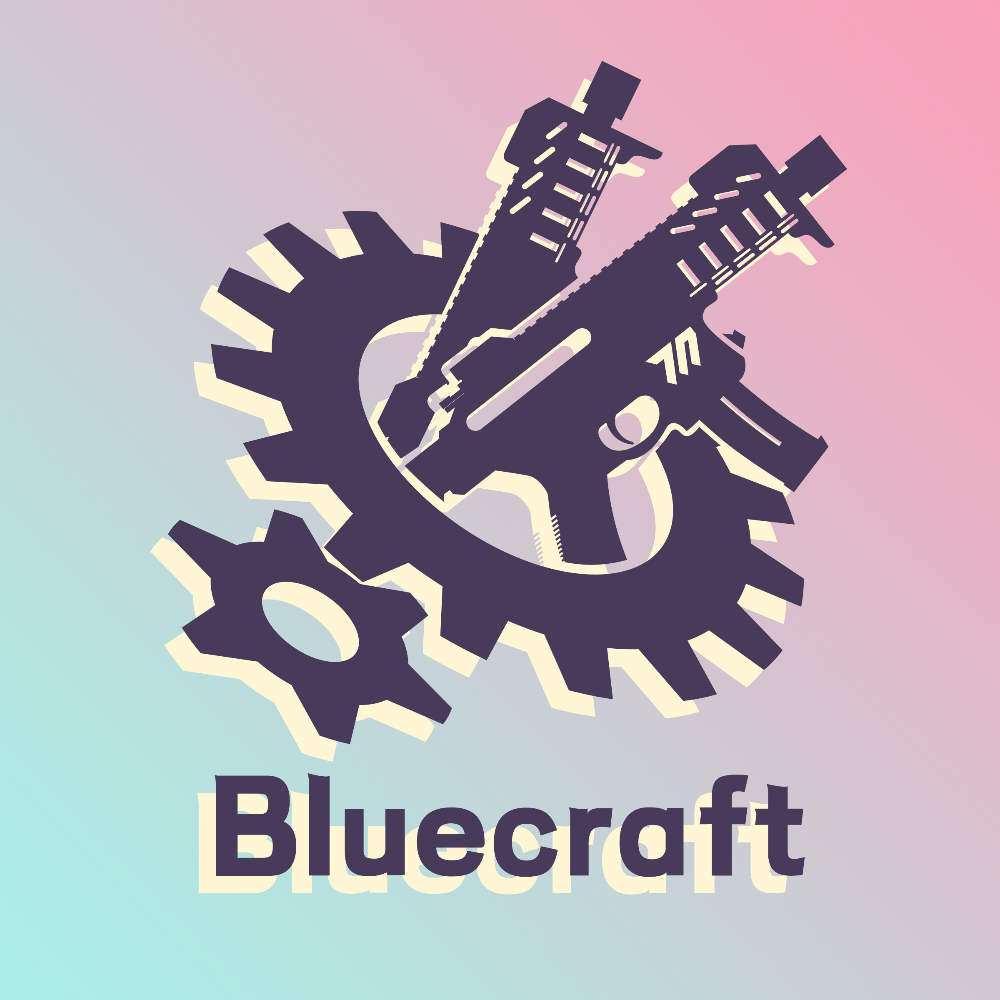
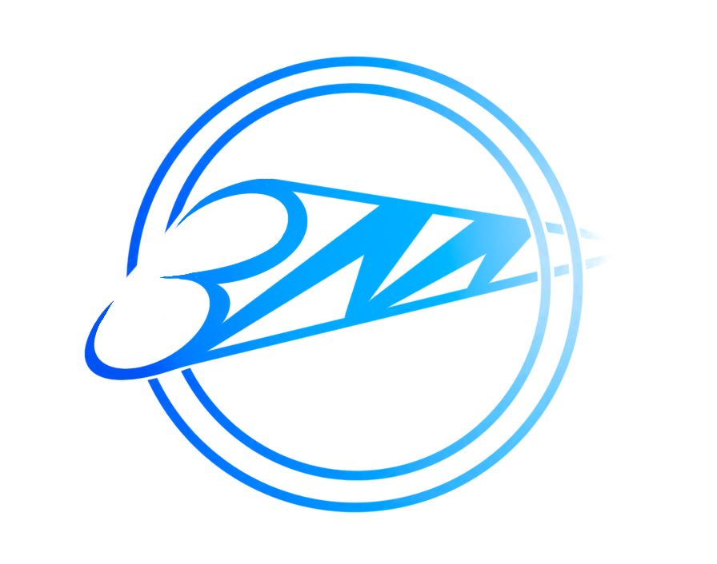

🎉《蔚蓝档案》国服 Final. 一切奇迹的起点篇 第 1 章 “沙勒夺回战” 现已更新！ 点击查看
蔚蓝档案 的 第三方 网站！这是蔚蓝档案的第三方网站。
重要提示：本站是 非官方 网站，本网站表达的观点未必反应官方的观点。
关于游戏《蔚蓝档案》的介绍。
《蔚蓝档案》是一款由韩国 NEXON Games 旗下的 MX studio 开发,上海悠星网络发行的二次元角色扮演游戏。以虚构的巨型联邦都市「基沃托斯」为故事背景。在这块神秘而辽阔的土地上，活跃着由少女们成立的、各具特色的活动社团，这些社团分别隶属于不同的「理事会」，「联邦理事会」是统合了数千个理事会的最高机构。但联邦理事会长突然消失，使这里的一切都陷入瘫痪。而作为联邦搜查社「沙勒」顾问老师的玩家，将与来自基沃托斯不同社团的少女们相遇，并与她们一起解决发生在「基沃托斯」的各种事件。
| 服务器 | 官网 方式下载 | Google Play 方式下载 | AppStore 方式下载 | 其他 方式下载 |
|---|---|---|---|---|
| 日服 | - | Play Store | App Store | - |
| 国际服 | 官网(NexonLauncher) | Play Store | App Store | - |
| 国服 | 官网 | - | App Store | TapTap | Bilibili Game |
Wiki| 群名称 | 群号 | 简介 | 保留 |
|---|---|---|---|
| 夏萝莉的后宫5群 | 932119293
|
群内主要用来讨论与交流关于 游戏《蔚蓝档案》；偶尔发癫 发色图；群主不是正常人；群里有男娘 | - |
| 蔚蓝档案交流群 | 839638418 |
- | - |
如果想申请添加名单，请联系我。
Minecraft 服务器

你可以 联系我 来申请本域名的二级域名
本网站 是游戏 《蔚蓝档案》 的同人网站，其中的信息均为 已经公开了 的信息。本网站上的内容不代表任何官方观点。
本网站为非盈利站点。
本站与 ブルーアーカイブ、Yostar、Nexon 以及 Nexon Games
没有任何形式的关联。
Copyright © 2024 KFACBT. All rights reserved.
本站基于 MDUI 构建，相关版权归原作者所有。